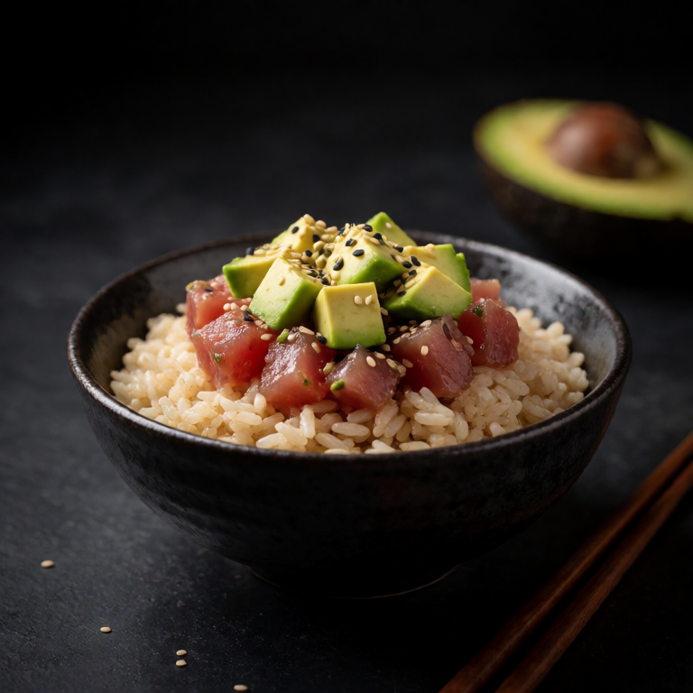

Creamy cottage cheese, ripe peaches, and hot honey make a sweet, spicy bowl with plenty of contrast.
Use a wide bowl for Cottage Cheese with Peaches and Hot Honey so full fat cottage cheese and ripe peach have room to stay distinct. Season the base first and taste again after the toppings are in place.
At a Glance
Prep
3m
Cook
0m
Serves
1
Difficulty
Easy
Rate this slopBe the first to rate it.
Ingredients
Method
- 01
Assemble
Scoop the cottage cheese into a bowl. Arrange the sliced peaches on top. Drizzle generously with hot honey and sprinkle with flaky salt and almonds.
Easy swaps
This bowl survives substitutions well. Trade full fat cottage cheese for tofu, a fried egg, or last night's vegetables and keep the sauce constant.
Storage
Refrigerate leftovers for up to three days with wet elements separate when possible. Reheat the base gently, then add full fat cottage cheese and ripe peach after warming.
Slop Notes
The combination of sweet peaches, spicy honey, and creamy cheese is unexpectedly perfect.
Recipe by foidslop · How we create our recipes
The Weekly Slop
Seven dinners for one, one short note, every Sunday. No life story.
One email every Sunday. Unsubscribe whenever. Double opt-in. See the privacy policy.
Keep eating
Related recipes


